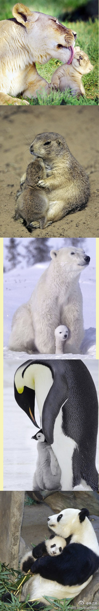
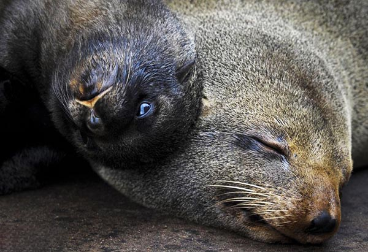
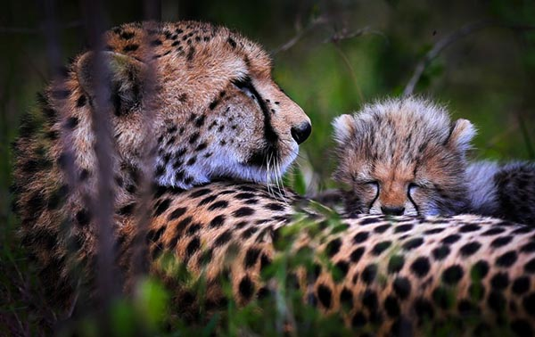
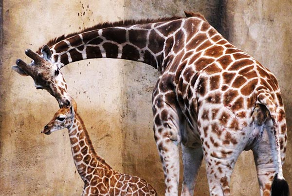
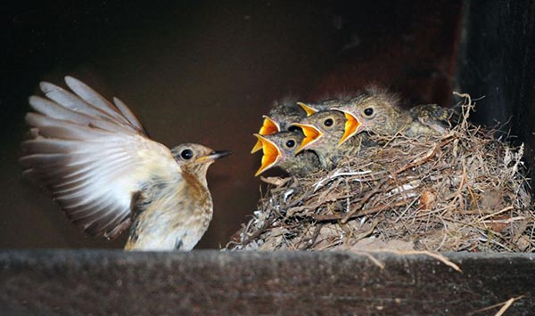
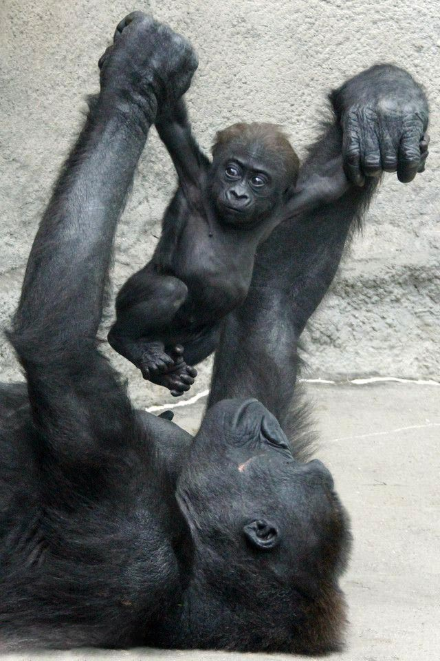
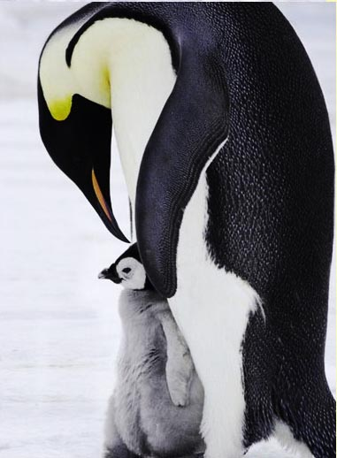
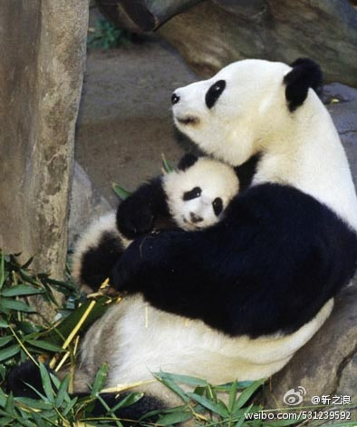

2016-05-08
说到母亲，我们心中都会出现很多温馨的画面。其实不止人类，动物间的母子情谊也是非常温馨感人的。所谓“舔犊情深”首先不就是形容动物的爱子之情吗？在母亲节到来之际，就让我们来一睹动物界的“母慈子孝”吧。

2008年1月19日，安徽省淮北市相山公园的母子猴在雪中相拥取暖。

母亲与孩子之间的“其乐融融”。

2011年6月10日，英国布里斯托，南美海狗母子在一起。

2013年11月23日，在肯尼亚马赛马拉保护区，一只猎豹幼崽趴在母亲身上睡觉。

2014年3月19日，在德国慕尼黑，一只小北极熊与它的妈妈依偎在一起。

2014年1月9日，在墨西哥查普特佩克动物园，一只大羚羊幼崽与它的妈妈“行贴面礼”。

2009年12月18日，加拿大卡尔加里，动物园里的长颈鹿母亲和它两周大的孩子。

2010年8月16日，韩国忠北堤川市龙头山，北红尾鸲在喂小鸟吃虫子。

2012年5月2日，美国匹兹堡，大猩猩Moka与自己3个月大的宝宝一起玩耍。

2012年6月5日，一只蜗牛宝宝在妈妈背上搭便车，这样它在过一个小水坑时就不会把自己弄湿了，还能吸收一点额外的阳光。这有趣的一幕被33岁的印尼摄影师Uda Dennie拍了下来，当他看到时简直不能相信自己的眼睛。

2011年6月7日，澳大利亚悉尼，澳大利亚动物园的母狮正在用嘴舔她刚出生的狮子宝宝。




面对孩子，再凶猛的动物也会露出它最为柔软的一面。面对孩子，再柔弱的母亲也能独自撑起一片天。今年5月8日是母亲节，我们用这组照片，致敬世界上最强大的本能，最坚韧的情感，最深情的存在——母爱。
更多专题